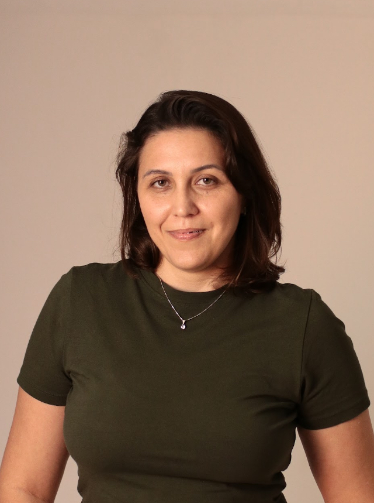
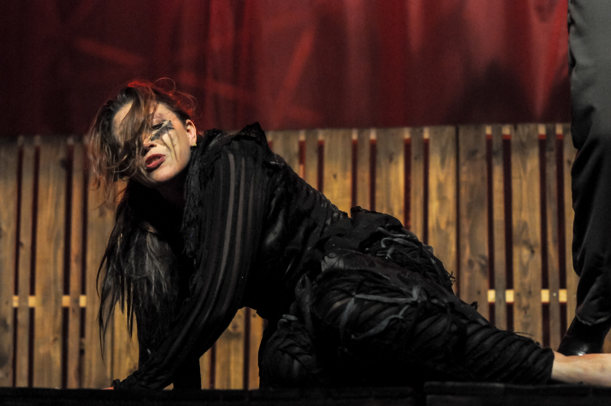

Renata Weber
ATRIZ • DIRETORA • PROFESSORA
ATRIZ • DIRETORA • PROFESSORA
Renata Weber é uma profissional multifacetada das artes cênicas, com uma carreira consolidada que atravessa os palcos do teatro, as cabines de direção e as salas de aula.
Como atriz, construiu uma trajetória marcada pela versatilidade e profundidade interpretativa, participando de produções que exploram desde o teatro clássico até propostas contemporâneas experimentais.
Na direção, desenvolve uma linguagem própria que valoriza o trabalho colaborativo e a pesquisa dramatúrgica, criando espetáculos que dialogam com questões contemporâneas e provocam reflexão.
Como educadora, compartilha seu conhecimento formando novas gerações de artistas, com metodologias que unem técnica, sensibilidade e consciência crítica.
2019
Mestrado em Artes Cênicas
Universidade Federal de Uberlândia - UFU
Uberlândia - MG
2015
Licenciatura em Artes
Centro Universitário Filadélfia - Unifil
Londrina - PR
2011
Bacharel em Artes Cênicas
Universidade Federal de Goiás - UFG
Goiania - GO
1999
Pluft o Fantasminha
Espetáculo infantil. Papel principal como Mirabel
Alta Floresta - MT
2012
Copo de leite
Espetáculo drama. Papel da vilã
Goiania - Go
2015
A viagem de um barquinho
Atuação como a personagem coadjuvante
Alta Floresta - MT
2026
O testamento de Afonso Quirino
Direção premiada
Goiania - GO
2025
Piquinique no front
Direção de espetáculo baseado em texto de Fernando Arrabal
Goiania - GO
2025
Piquinique no front
Direção de espetáculo baseado em texto de Fernando Arrabal
Goiania - GO
2025 - Atual
Professora de teatro
Escola Basileu França
Goiania - GO
04/2017 - 12/2018
Professora Universitária
Universidade Federal de Goiás - UFG
Goiania - GO
10/2014 - 12/2015
Professora de teatro
Secretaria de Educação do Estado de Goiás
Goiania - GO



Interessado em colaborações, projetos ou workshops? Entre em contato.